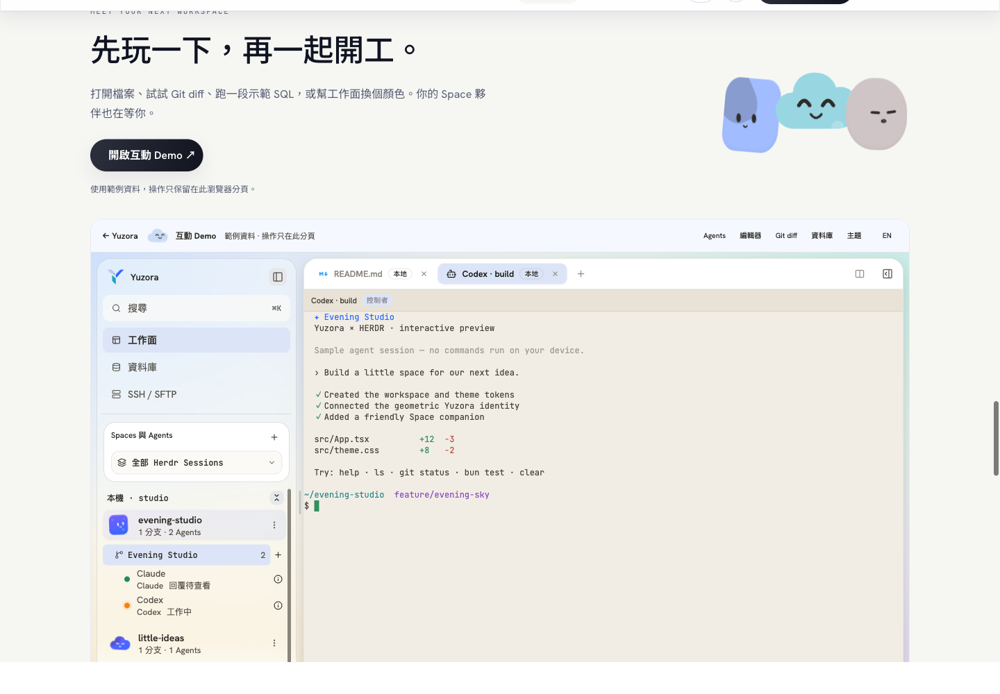
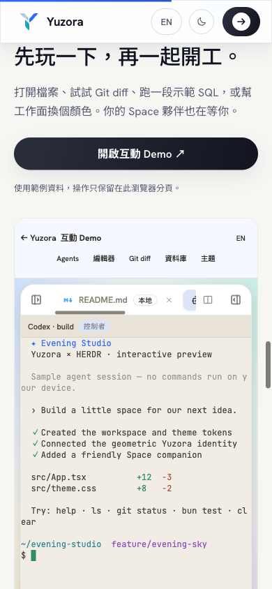

2026-09-10 · 本機實作與驗收
開啟網站預覽 · 開啟互動 Demo · 純標誌 SVG · 含文字 SVG


| 檢查 | 結果 |
|---|---|
| 真實瀏覽器：五種主題色 | App Logo 的實際 fill 與 favicon 產生五組不同結果；網站 palette 與 favicon 同步。 |
| Demo 實際操作 | 終端輸入、編輯器與分頁、Git diff 整合／分割、SQL 查詢與資料表欄位、主題設定。 |
| Pages 子路徑 | /Yuzora/demo/ 實測無資源 404；深色與珊瑚色換色正常。 |
| 手機版 | 390px 頁面與 348px iframe 無橫向溢出；Spaces 側欄自動收合為 0px。 |
| 影片播放 | 六段 MP4 已渲染；網站中文三段實測寬 1440、高 960、片長約 11–14 秒。 |
| 自動檢查 | App build、Demo build、TypeScript、相關 ESLint、Remotion lint／typecheck、46 項相關測試、cargo check --locked --lib 均通過。 |
bun run demo:dev 啟動 Demo；bun run demo:build 生成 site/demo/。Pages workflow 會在部署前建置 Demo，並從 App 元件重新生成網站角色。完整錄製方式見 RECORDING.md。
Demo 的所有原生呼叫只進入獨立記憶體 adapter。SQL 僅支援範例 SELECT／ORDER BY／LIMIT；不啟動 shell、不連接主機、不讀取訪客檔案。桌面正式入口不匯入 Demo 程式。
正式 gh-pages 尚未部署。 本次未執行 Git add／commit／push；專案 AGENTS.md 與 CLAUDE.md 要求使用者明確授權 Git 寫入。
新原生安裝包尚未產生。 tauri build --debug --bundles app 被既有 runtime:verify 擋下：macOS Intel 與兩個 Linux host artifact 仍使用 HERDR 0.8.2 / protocol 20，而目前期待 0.9.0 / protocol 22。macOS ARM 本機資源已透過 host:prepare 更新並驗證，但另外三個 runner 的資源仍須更新。未繞過驗證或改動已安裝 App；原生圖示同步程式已通過 Rust 編譯，OS 實機換色仍待新版執行檔驗收。
{kind=link}
{kind=link}